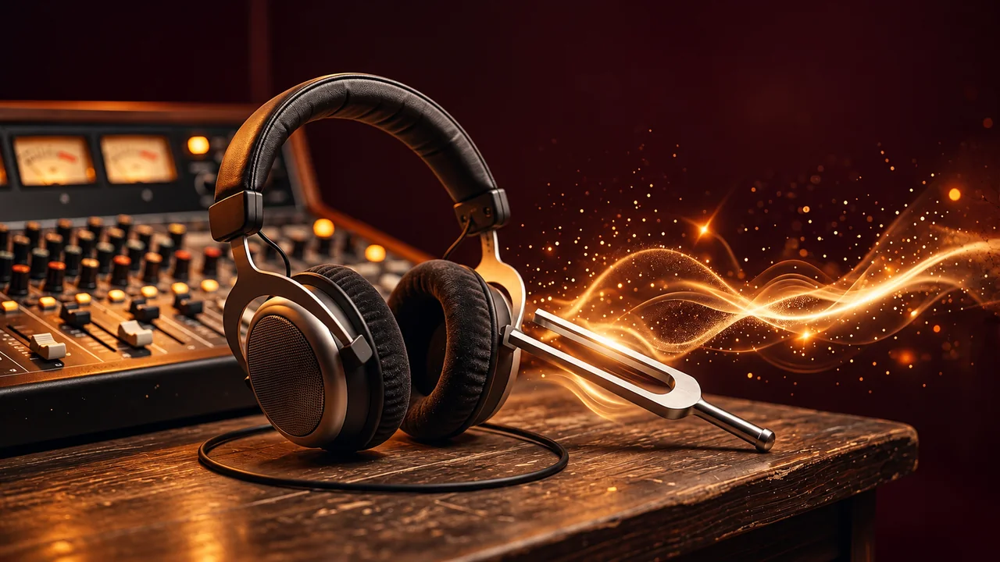

OUVIR · ESCREVER · COMPREENDER
Ditado no pentagrama

Ouça dois compassos em 4/4 ou 6/8 e escreva as alturas, durações e pausas. A avaliação compara as notas e suas posições rítmicas; não mede a velocidade da sua resposta.
Há quatro tempos de contagem inicial. Ouça até o final antes de escrever.
Solução e orientação
Complete uma tentativa para ver a correção.
Você pode corrigir e avaliar novamente. Apenas a primeira avaliação deste ditado é salva.
O link conserva código, tonalidade, dificuldade, compasso e ligaduras. Tempo e instrumento podem ser escolhidos por quem abrir.
Biblioteca Walamort · em espanhol →
Voltar ao ditado com teclado →
As tonalidades menores usam a escala menor natural.
O áudio usa timbres sintetizados. Não solicita microfone nem grava som.